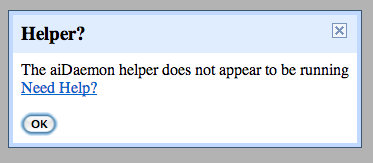

- Installing device drivers
- Using the Blocks Editor and loading projects
- Connecting the phone over wifi
- Using the emulator on a Mac
- Running apps on the phone
- Testing Apps With Multiple-Screens
- Working with sounds and images
- Packaging projects for a device
- Keystores and Signing of Applications (".apk" files)
- I'm just lost!
Installing device drivers
I ran the App Inventor Setup installer on Windows, but the phone device drivers do not install.
There are multiple reasons for this, and we're trying to track them all down. The Windows driver installation instructions in the App Inventor documentation contain our best advice, and we'll keep those current as we get more information from users.
Note that the drivers included in with the App Inventor Setup software do not work on all Android devices, and you may need to get drivers from the manufacturers. See the Windows driver installation instructions for advice, and check the App Inventor Forum to see if others have had similar issues with the version of Windows and the particular device you are using.
Also, the driver issues around App Inventor are the same as for the Android SDK in general, so doing a Web search for driver issues around the Android SDK may also be worthwhile. It also might be worthwhile to search the Android Beginners Google Group and the Android Developers Google Group.
Using the Blocks Editor and loading projects
My Blocks vanished from the Blocks Editor.
They may have scrolled off the window. Try moving the scrollbars. A way to move the scrollbar even more than it allows is to drag a block to the bottom or top of the scrollbar, release, and repeat.
The Blocks Editor won't connect to the phone or media files don't show up on the phone.
There are several possible causes for this, depending on the model phone you are using. Causes include (1) the settings on your phone and (2) interference from other applications running on your phone or your laptop. Take a look at the connectivity troubleshooting page for some things to try.
I'm using Firefox and I get a message about being unable to access project definitions.
If you are using Firefox and have the "noscript" extension installed, you'll need to disable it or else you'll see errors saying that the system cannot access your project definitions. Other tools and system configurations that restrict access to your computer (e.g., firewalls) may also interfere with App Inventor. You should check for these if you encounter errors about reading definitions or connecting to the phone.
Connecting the phone over wifi
I'm using wireless and the phone won't connect to the blocks editor.
Try the following steps to troubleshoot your wireless connection.
- Try to reach http://rendezvous.appinventor.mit.edu from your computer.
- Try to reach http://rendezvous.appinventor.mit.edu from the phone itself.
- If the steps above both work, try using the "ping" command to ping to the IP Address of the phone (displayed by the MIT AICompanion in its startup window). If you are using windows, type "ping" + *IP address of the phone* in cmd.exe window, if you are using mac or linux, type type "ping" + *IP address of the phone* in terminal window. Detailed instruction see http://www.wikihow.com/Ping-an-IP-Address
- If all of these steps succeed and Wireless App Inventor *still* doesn't work, then there may be a firewall between the computer and phone that is blocking ports 8001 and 9987. If you have a "telnet" program you can attempt to telnet from the computer to the phone on these ports. If the connection won't complete, then there is likely a firewall in place that is blocking connections to the phone.
I cannot find the MIT AICompanion App on the Google Play Store.
If you cannot access the MIT AICompanion App via the Google Play Store, you may download it here AppInventorCompanionApp.apk and install it directly onto your phone (note that to directly install, you will need to allow installation of non-market apps in your device's system settings). Directly loading App Inventor in this way means that the Play Store can not automatically update the App. When there is an App Inventor upgrade, you will need to manually update the Companion App.
I installed the MIT AICompanion App before and it doesn't work now.
You must use the latest version of the MIT AICompanion App. If you attempt to use an older version of the Companion App with App Inventor, you will be prompted to update it.
I followed all the wireless instructions and my phone is connected to wifi, and I still cannot connect to App Inventor via wifi.
If you have trouble connecting using these wireless instructions, make sure your phone is using WiFi and not the cell network. On some devices and in some locations, even with WiFi enabled, the phone continues to use the cell network for Internet connectivity. If this is happening to you, you can disable mobile networking (cell phone carrier based Internet connectivity) from your device's Android settings menu.
Running the Emulator
I'm using the emulator on a Mac and it's not working.
Any time that you want to use the emulator, you need to make sure that aiDaemon, a program that gets installed on your computer when you installed the initial setup package, is running.
If this program is not running, you'll get an error message similar to the one below.

This program will be downloaded into your /Applications folder. If it's not, click here to go back to the setup instructions for mac.
Running apps on the phone
I was developing an app and it crashed on the phone.
Try clicking the button in the Blocks Editor that says "Disconnect from Companion" and then click "Connect to Companion" to restart. Ask for help from other users in the App Inventor Forum.
My phone doesn't seem to match what's in my program.
First try clicking the Designer button then click back to the Blocks button. Sometimes the app is behind and needs to be updated to your phone. Switching between these two screens causes a refresh or update to happen.
I was developing an app and I unplugged the phone, and the app disappeared from the phone.
It's supposed to disappear. If you want to use the app when the phone is disconnected, you'll need to package it and download it to the phone.
The code size for the apps I create is very large. Even the simplest apps have apk files that are larger than a Megabyte.
App Inventor apk files are in fact very large. We're working to reduce their size.
My app causes a virus warning.
There is a known issue with certain virus protection software, in particular the "Dr. Web" anti-virus app. Any app that uses the texting component (SMS) will generate the virus warning "android.smssend.origin.247". This is a false positive virus detection that you can safely ignore.
Testing apps with multiple screens
I'm trying to test my app that has multiple screens and it's not working correctly
Apps with multiple screens must be packaged and sent to the phone to test. If this is a problem for you due to wifi or other issues, follow these instructions:
- Download the free app called ES File Explorer from the Google Play Store on your Android device.
- Use Ap pInventor Designer Window to download the App to your Computer. (Your Blocks Editor Window must be launched for a successful package).
- Connect your Android device to your computer as a USB Device.
- Using your computer, navigate to your Computer, and find your device, and double click to navigate to its Download Folder.
- Drag and drop your app's .apk file from the Computer's Download Folder to your device's Download Folder.
- On your device, launch the ES File Explorer App. Using this app, you can then navigate to your tablet's Download Folder and double click on your appinventor app to launch it!
Working with sounds and images
I set the image property of a button (or other component) to an image file, but nothing shows on the phone.
There are several possible causes for this, so there are several things to try:
- Make sure your phone has an SD card and that the SD card is not full. App Inventor uses the SD card for temporary storage of images, and the phone needs to have an SD card in order to run App Inventor.
- Make sure your phone's USB connection mode is not mounting the SD card. For example, on the Droid, you should set the connection mode to "charge only".
- If you get an error message about external storage, you'll need to check that your phone is not set for Mass Storage mode: Tap the Home button to go to your phone's Home screen, then Tap the Menu button, then tap Settings, then tap Connect to PC. Tap Connection Type and choose "Charge Only". Make sure that other choices are not selected. It is especially important that choices "Disk Drive" or "Mass Storage" are NOT selected (these words vary by phone and Android Operating System version).
- Try unplugging the phone and plugging it back in. Followed by clicking on the "Connect to Device" button.
- If that doesn't work, try packaging and downloading the app. Start up the downloaded app, and see if the image appears on the phone. If the image does appear, then you'll have to continue developing without the image showing on the phone. You'll see your app in its full glory only after you've packaged and downloaded it, not while you're developing the app live. Please ask about this in the App Inventor Forum.
- If your image does not appear in the packaged app either, then you should suspect that there is something wrong with the image file. Perhaps it is not really an image file: Try examining the file with some graphics software. Perhaps it's not an image in a format that App Inventor can process: App Inventor can handle JPG, PNG, or GIF. Maybe the file is too large: try using graphics software to cut its size down to less than 300K.
- If none of these things work, try asking for help in the Getting Set Up and Connecting Your Phone User Discussion Forum.
- Tip: You can sometimes see complaints about the phone running out of storage by using the Android Debug Bridge to examine the Android system log.
I set the source property of a Sound or Player component, but there's no sound when I tell the phone to play.
If you are working with the phone connected to the computer, make sure the phone really is connected. Try using "Do it" on a few blocks, including the block that tells the component to play. Also make sure the phone's media volume is not turned down!
If this doesn't help, try some of same things as with images, above. Watch out for running out of storage. (See Media for information on media in App Inventor.) And make sure the audio file is a format the Android (and hence App Inventor) knows about. MP3 and PCM/WAV files should be OK, but there may be issues with other formats. See http://developer.android.com/guide/appendix/media-formats.html for a list of supported media formats. Warning: Not all WAV files are PCM/WAV.
Hello Purr does not work on my Lenovo A1 Tablet -- the meow.mp3 file won't play.
Change your blocks to use the Player component instead of the Sound component.
Packaging projects for a device
When I try to package my project, it fails with "unexpected problem generating Yail".
This error occurs if packaging the project fails at the very last stage. This error message is a catch-all that covers "unexpected" errors where App Inventor hasn't provided a useful error message.
There are several situations where this error has been observed. One is with large projects that have multiple screens: The individual screens build correctly, but the system runs out of space in putting all the screens together at the final packaging. Another situation is where the project file is corrupted, for example by the user unzipping it making an edit and then re-zipping it. This can lead to spurious files being included in the new zip file, which confuse the compiler. Another might be bad names for figures or other assets, that can trip up the compiler.
If your project gets this error, think about whether there could be causes like the two listed above. If that doesn't help, try asking in the forum: You'll need to attach your project source so that someone can try to diagnose the problem.
Keystores and Signing of Applications (".apk" files)
I'm seeing the error [INSTALL_PARSE_FAILED_INCONSISTENT_CERTIFICATES] when I try to download my app to my Android device
If you get this error message you most likely are trying to reinstall an app on your device that you have previously packaged and installed with a different App Inventor service. For example, you might have packaged the app originally with the Google App Inventor service and now you are trying to re-package with the MIT App Inventor service, or with a service that someone else is running. If you don't have any data associated with the app on the device (e.g., in a TinyDB) the easiest solution is to remove the app from the device and then install the new version. If you need to preserve the data associated with the app, and you have a copy of the keystore that was used to package the app that is already installed, see below for how to upload the old keystore to the new service.
What is a keystore and why might I want to upload or download one?
Every Android app (".apk" file) needs to be signed with a key belonging to the user who creates the app (see http://developer.android.com/guide/publishing/app-signing.html for lots more information on signing apps). App Inventor generally handles this for you behind the scenes, so that most users don't need to think about app signing most of the time. However, you might run into a situation where you need to know about app signing if you move between different App Inventor services and you want to reinstall an application that was built on a different service while still preserving its local data. App Inventor keeps the key used to sign your apps in a file called a keystore. When you first start using an App Inventor service it creates a new keystore for you and uses that to sign any apps you package on the service. If you move to a different App Inventor service and want to keep using the same keystore to sign your apps (to avoid the inconsistent certificates problem mentioned above), you will need to download (or otherwise obtain) the keystore from the old service and upload that keystore into the new service. Options for downloading and uploading keystores can be found in the My Projects tab, under the More Actions menu. Note that the same keystore is used to sign all of a user's projects in a given App Inventor service, so you cannot designate one keystore for some apps and a different keystore for other apps.
How can I get the keystore that was used to package my apps in the original Google App Inventor service?
Most users of the original Google App Inventor service can find a copy of their app source zip files, as well as the keystore that was used to package their apps, in their Google Docs accounts:
- In your browser, go to http://docs.google.com
- Search for All-App-Inventor-Projects.zip.
- Download the zip file by clicking on Download under File.
- Unzip the downloaded file and you will find a directory called keystore containing a file called android.keystore. This file contains the keystore that was used to sign the apps for that App Inventor account on the Google App Inventor service.
I'm just lost!
Ask other users for help on the App Inventor Forums.